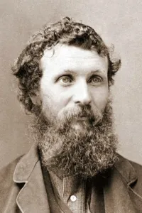

The famous quote "The mountains are calling and I must go" that displays on every webpage came
from a famous writer and outdoorsman by the name of
John Muir, who is regarded as
one of the "Father’s of our National Parks" in the USA. This specific quote is from a letter to
his sister describing his recent trip in the mountains in a very poetic fashion. This quote has
become very well-known as a trademark for people living in the Sierra Nevada, Appalaichan, Blue
Ridge, and Rocky mountain ranges.
In terms of this website, it is no more than a silly pun that is used to link the mountains
to a contact manager, because when someone calls, you want to know who's calling you!
Source: Get to Know the Story Behind Muir's "The Mountains Are Calling" Quote by Charles Watkins